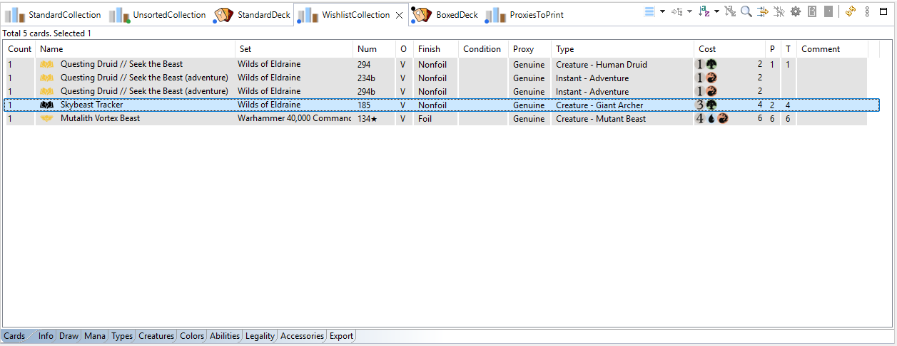
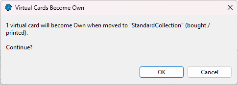

A Wishlist/To Print collection holds cards you don't own yet: cards you want to buy, or proxies you plan to print. Its cards are virtual, so they never count as part of your collection until you actually get them.

Add cards from the Scryfall Database as usual (Add to, drag and drop), or copy cards from your decks or collections: copies in a Wishlist/To Print collection are always virtual. Owned cards can't be moved into it (they would stop being yours) — copy them instead.
When a wished card arrives (or a proxy is printed), move it from the Wishlist/To Print collection to a Standard collection: right-click Move to, drag and drop, or Split & move for part of a pile.
ManaDesk asks to confirm that the cards become Own:

That's it: the cards are now part of your collection, and leave the wish list.
See also: Buyer · Proxier · Moving, copying and splitting